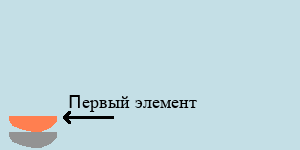
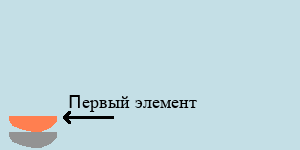

Стек
Стек — структура данных, которая достаточно часто используется для реализации различных алгоритмов. Самый частый пример его использования — реализация "истории", которая хранит действия от последнего к первому и с помощью которой можно совершать "откаты" на определённое количество шагов назад. Такая "история" есть в любом редакторе, а реализовать её проще всего через стек.
В большинстве современных языков стек реализован внутренними средствами, однако очень важно понимать, как он работает, поэтому — давайте напишем его самостоятельно!
Для реализации стека сперва неплохо бы понять, что он из себя представляет. Это есть структура данных, реализующая принцип LIFO — Last In First Out. Если перевести с импортного на русский, то получится что-то вроде Последний Вошёл — Первый Вышел. То есть, при запросе на получение элемента из стека вы получите тот, который был добавлен в стек последним.
Возможно, кажется сложным, поэтому давайте рассмотрим на простом и наглядном примере:
 

Стопка тарелок или книг — чем не пример стека? Чтобы достать что-то снизу, необходимо сперва поднять верхнюю, иначе вас постигнет судьба Вицина из "Операции Ы". Важно: при обращении за элементом, стек всегда вернёт тот, который был добавлен последним!!
В принципе, в написании стека нет ничего сложного. Мы будем использовать статические массивы (так как динамические в языках-гигантах очень разнятся по быстродействию и удобству, а статические почти везде одинаковы) и функции с переменными (так как ООП отсутствует в программах 7-9 классов) для реализации стека. Да, она будет весьма примитивной. Зато своя и понятная!
Итак, поехали. Мы будем использовать массив arr для хранения данных стека и целочисленную переменную length для хранения текущей длины стека.
Базовый стек должен уметь совершать следующие операции:
- Очистка стека;
- Добавление элемента в стек
- Получение последнего элемента из стека
- Удаление последнего элемента из стека
Очистка стека
C++
void clear(int &length)
{
length = 0;
};
Pascal
procedure clean(var length : integer);
begin
length := 0;
end;
К сожалению, функции в языке Python не могут изменять параметры, которые не являются сложными элементами (массивом, словарём, множеством и т.п.), поэтому будем использовать более банальные методы:
Python
length = 0 #Обнуление стека
Добавление нового элемента в стек
Первый элемент в массиве лежит в ячейке с индексом ноль. Изначальная длина стека — ноль. Следовательно, надо сначала "положить" элемент в последнюю ячейку стека, а потом уже увеличить длину стека:
C++
void add(int *mass, int &length, int value)
{
arr[length] = value;
length += 1;
};
Pascal
procedure add(var arr : array [0..N] of integer, var length : integer, value : integer);
begin
arr[length] := value;
length := length + 1;
end;
Python же опять доставляет неудобство тем, что целое число нельзя передать по ссылке:
Python
def add(arr, length, value):
arr[length] = value
length = length + 1
return length
Соответственно, использовать её придётся немного по-другому (далее будут примеры).
Получение последнего элемента из стека
Мы знаем, что длина стека length всегда на единицу больше, чем номер последнего элемента в нём (это следует из реализации функции add). Следовательно, последний элемент хранится в ячейке arr под индексом length - 1. Но важно не забыть проверку, что length > 0. Если length равно нулю, то элементов в стеке нет — надо вернуть левое значение/ноль/исключение/что-то ещё:
C++
int get(int *arr, int length)
{
if (length == 0)
exit(1); //Аварийный выход из функции
return arr[length - 1];
};
Pascal
function get(arr : array [0..N] of integer, var length : integer) : integer;
{
if (length == 0) then
exit(1); {Аварийный выход из функции}
get := arr[length - 1];
};
Python
def get(arr, length):
if length == 0:
raise ValueError('Стек пуст!') #Аварийный выход из функции
return arr[length - 1]
Удаление последнего элемента из стека
Чтобы удалить элемент из стека, достаточно просто уменьшить его длину на один. Но нельзя забывать, что длина стека не может быть меньше нуля:
C++
void del(int &length)
{
length -= 1;
if (length < 0)
length = 0;
};
Pascal
procedure del(var length : integer);
begin
length := length - 1;
if (length < 0) then
length := 0;
end;
Python же опять доставляет неудобство тем, что целое число нельзя передать по ссылке:
Python
def del(length):
length -= 1
if length < 0:
length = 0
return length
Пример использования
Мы покажем следующий пример: добавить в стек числа 1, 2 и 3 и поочерёдно их извлечь, выводя на экран:
C++
clear(length);
add(mass, length, 1);
add(mass, length, 2);
add(mass, length, 3);
for (int i = 0; i < 3; ++i)
{
std::cout << get(mass, length) << " ";
del(length);
};
Pascal
clear(length);
add(mass, length, 1);
add(mass, length, 2);
add(mass, length, 3);
for i := 1 to 3 do
begin
print(get(mass, length), ' ');
del(length);
end;
Python
length = 0
length = add(mass, length, 1)
length = add(mass, length, 2)
length = add(mass, length, 3)
for i in range(0, 3):
print(get(mass, length), end = ' ');
length = del(length)
Поздравляю! У вас есть стек. И пускай он несколько примитивен, зато написан своими руками.
Структуры данных ©Все права защищены